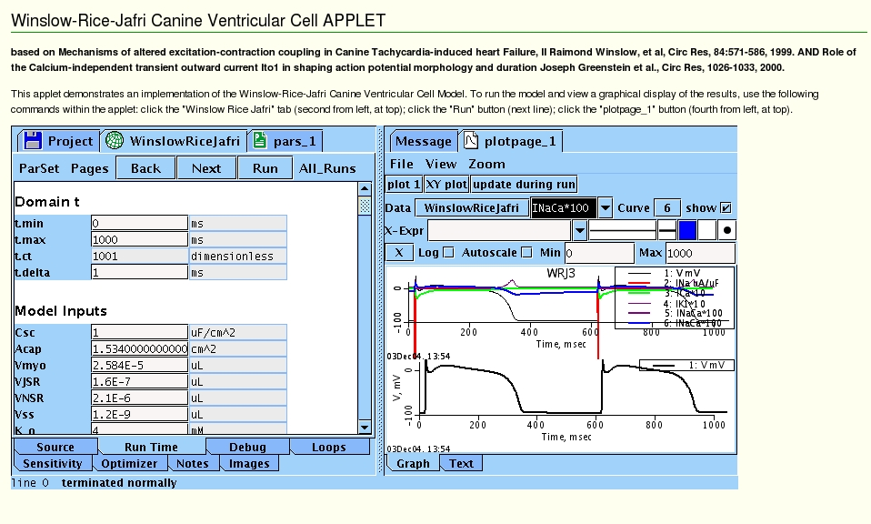

Readme.html for a web-link to the model code associated with the papers:
Ref 1: Raimond Winslow, et al,
Mechanisms of altered excitation-contraction coupling
in Canine Tachycardia-induced heart Failure, II
Circ Res, 84:571-586, 1999.
Ref 2: Joseph Greenstein et al.,
Role of the Calcium-independent transient outward current
Ito1 in shaping action potential morphology and duration
Circ Res, 1026-1033, 2000.
The java model code is available from
http://nsr.bioeng.washington.edu/PLN/Members/garyr/electrophysiology/WinslowRiceJafriCanineVentricularCell.proj/view
How to run the model:
If you have Java installed and the plug-in is properly installed in your browser
you can run the model online (including the ability to edit parameters as an applet).
After you run the model (see online instructions) your browser will look something like this:
